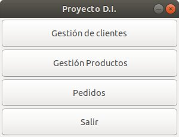
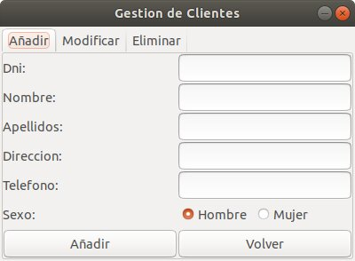
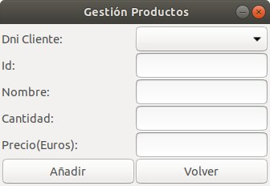
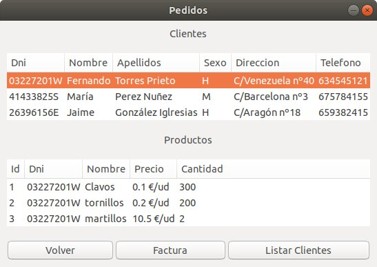

Manual¶
Esta aplicación funciona en ubuntu con Gtk3. La aplicación simula un programa de gestión de pedidos. Composicion:
- Varios formularios, entre ellos:
Tenemos un menu con 4 opciones:
Gestión de clientes: Añadir, modificar o eliminar.
Gestión de productos: añadis productos.
Pedidos: Lista de clientes y productos asignados a cada cliente. y generamos facturas o un informe de los clientes.
Salir: para salir de la aplicación.
Utilización de SQLite en modo local, en la que se crean dos tablas, clientes y productos.
Se generan los informes usando Reportlab.
- El funcionamiento consta de un menu con 4 opciones:
- Gestión de clientes permite añadir nuevos clientes, modificarlos a traves de un comboBox seleccionando su dni y eliminarlos.
- Gestión de productos en la que podemos asignar productos a los diferentes clientes clientes.
- Pedidos en el que podemos listar clientes y sus productos asignados mediante Treeview y crear factura para el cliente o generar una lista de todos los clientes.
- Salir permite cerrar el programa.
Además en cualquier momento podemos cerrar el programa dandole a la X o volver al menu con el boton volver